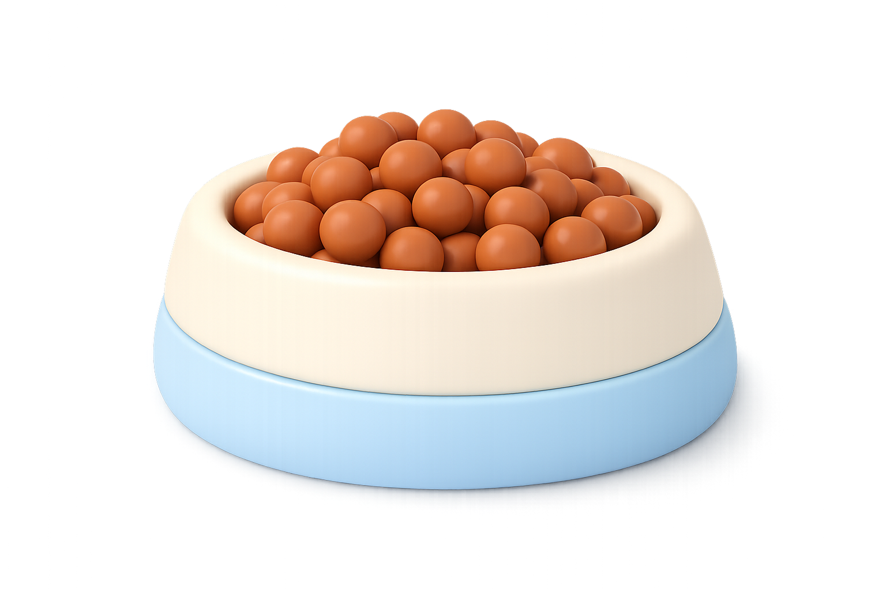
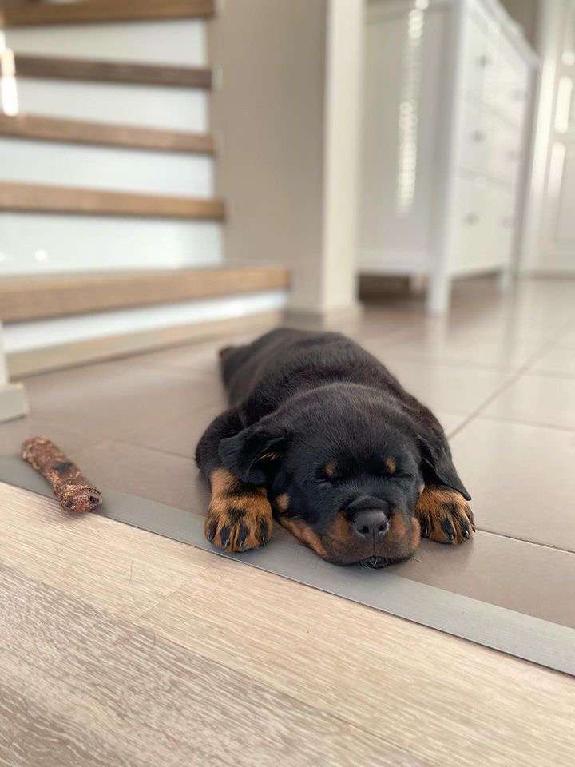

About us


PawTails began as a personal idea inspired by my dog, Frida, a rottweiler who quickly became the center of our daily routine. As a software developer, I have always been driven by building practical products with modern technology, and this project grew from that mindset: create a simple, reliable way to turn good intentions into consistent care.
Today, PawTails is designed for dog owners who want to take an extra step in caring for their pets. The goal is to make everyday coordination clear across partners and households, so routines stay organized and small mistakes, like accidental double dinners, are easier to avoid.
Questions, feedback, or partnership ideas: pawtails@proton.me